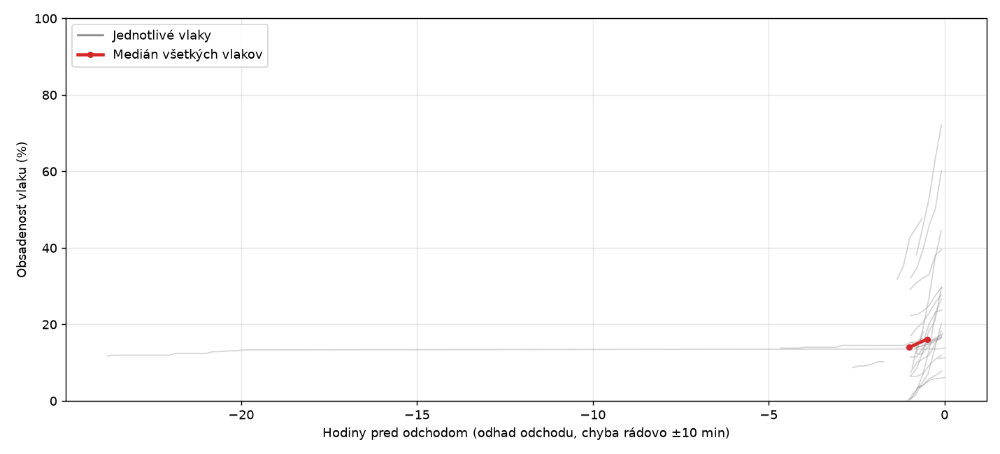
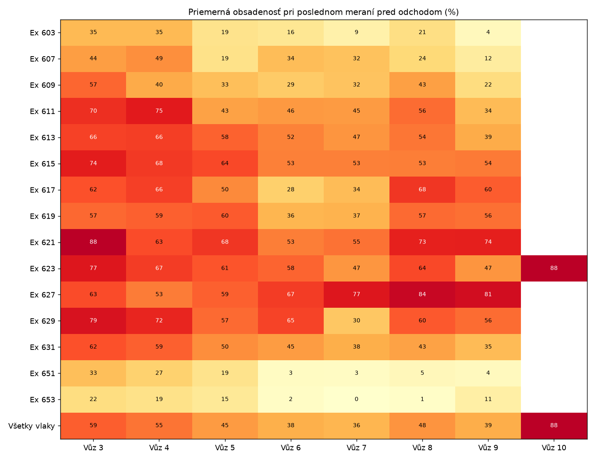
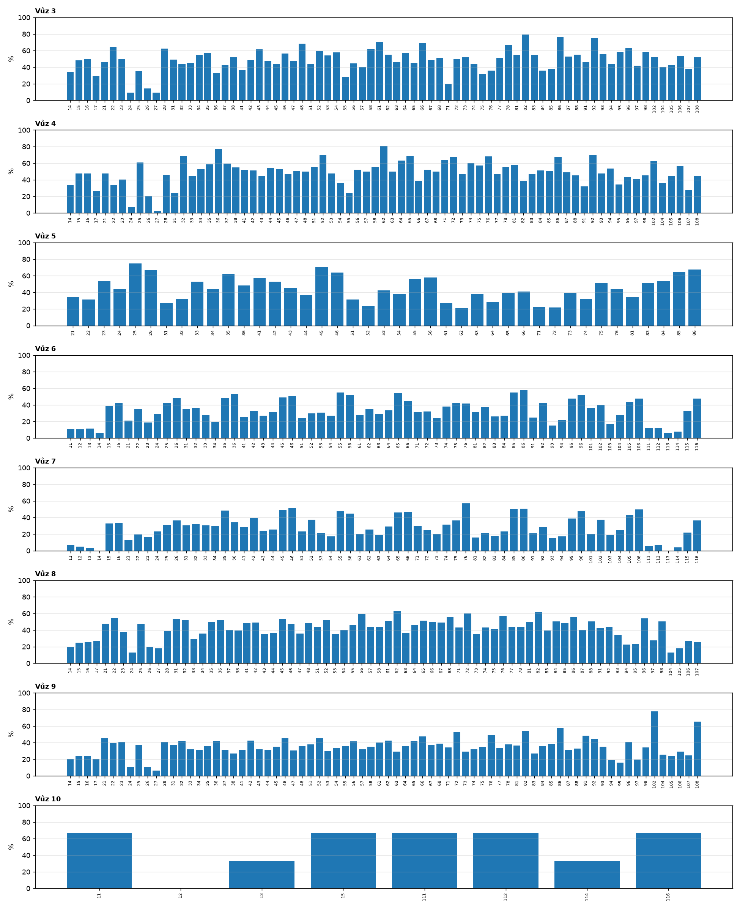
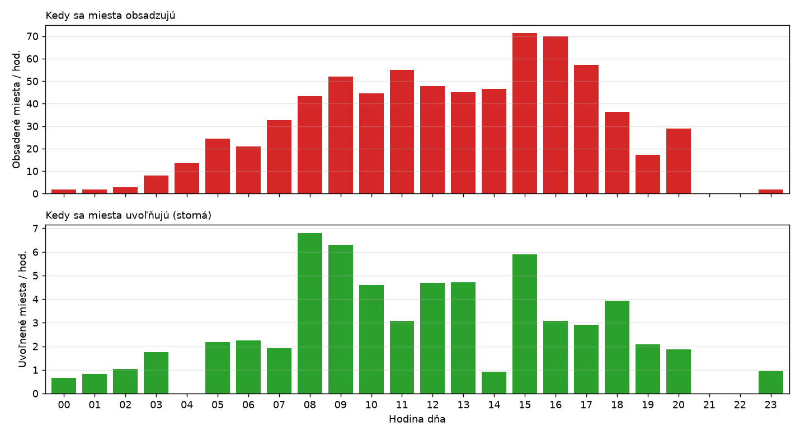
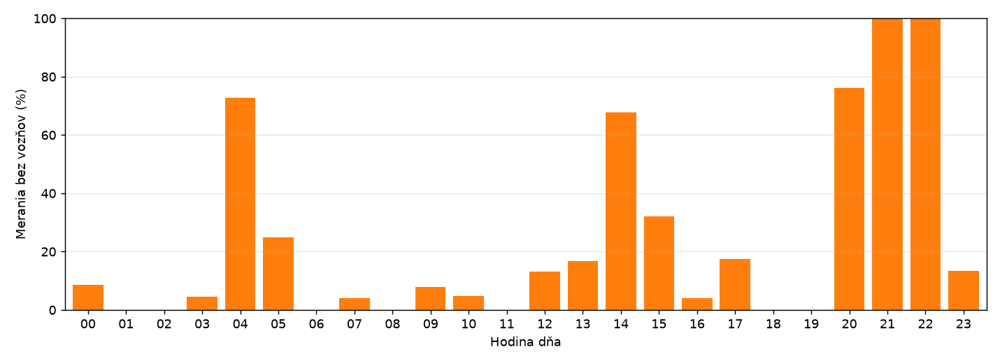
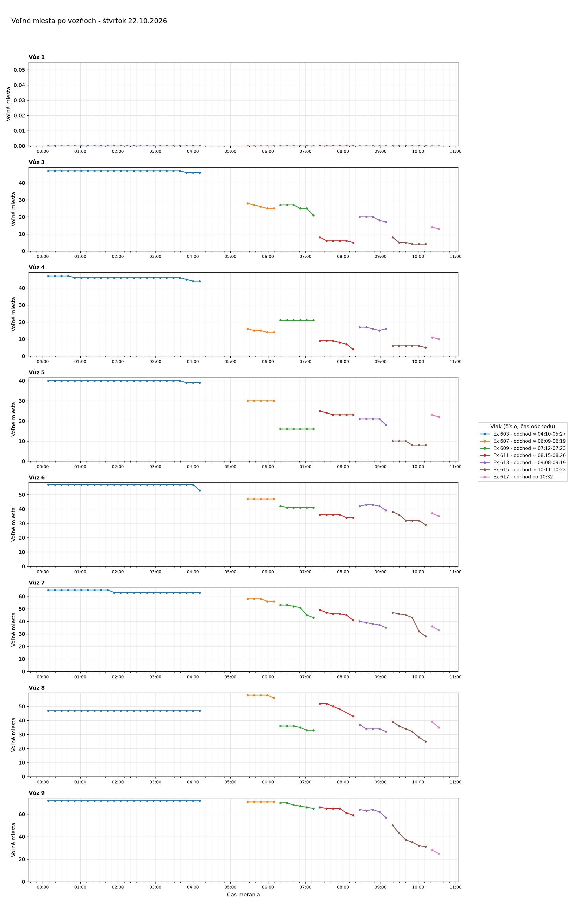
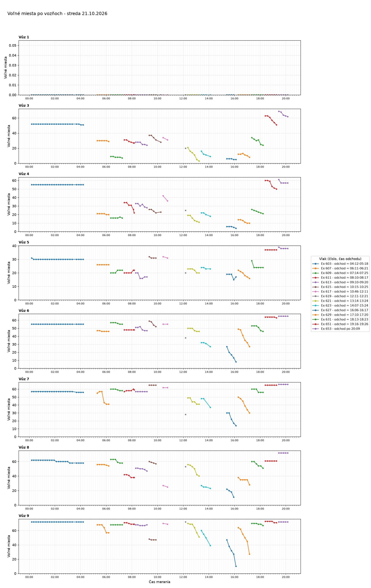
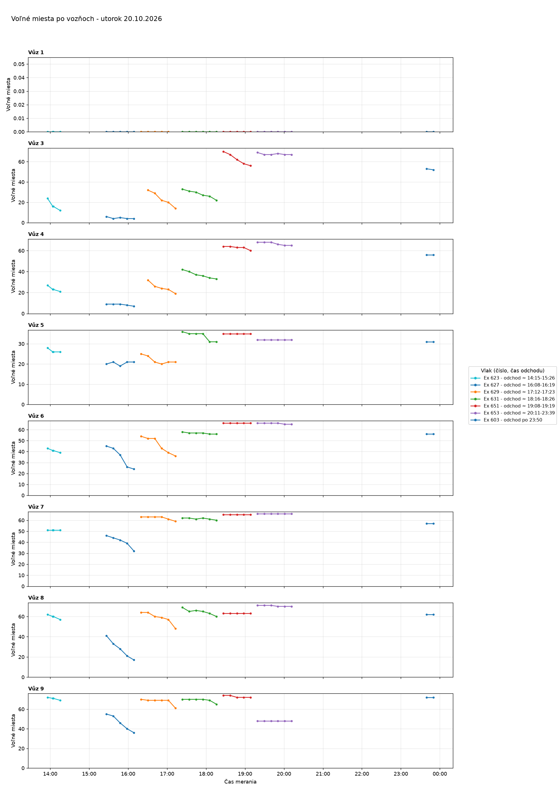

Voľné miesta vo vlakoch
Posledné meranie: 22.10.2026 10:32 · stiahnuť dáta (CSV)
Súhrn po dňoch
| Deň | Meraní | Vlakov | Čas meraní |
|---|---|---|---|
| štvrtok 22.10.2026 | 54 | 7 | 00:08-10:32 |
| streda 21.10.2026 | 96 | 15 | 00:10-23:58 |
| utorok 20.10.2026 | 34 | 7 | 13:55-23:50 |
Štatistiky
Typický priebeh obsadenosti pred odchodom
Sivé čiary sú jednotlivé vlaky, červená čiara je medián. Ukazuje, koľko hodín pred odchodom sa vlaky bežne plnia. Obsadenosť sa počíta z odhadnutej kapacity a čas odchodu je odhad z časov meraní.

| Pred odchodom | Medián obsadenosti | Vlakov v mediáne |
|---|---|---|
| 1 h | 14 % | 22 |
| 0.5 h | 16 % | 21 |
Plnenie vozňov
Priemerná obsadenosť každého vozňa pri poslednom meraní pred odchodom. Tmavšia farba znamená plnší vozeň. Posledný riadok je priemer cez všetky vlaky.

| vozen | Vlak | Vůz 3 | Vůz 4 | Vůz 5 | Vůz 6 | Vůz 7 | Vůz 8 | Vůz 9 |
|---|---|---|---|---|---|---|---|---|
| Ex 603 | 26 | 21 | 8 | 9 | 7 | 25 | 0 | |
| Ex 607 | 34 | 37 | 10 | 24 | 24 | 11 | 11 | |
| Ex 609 | 50 | 29 | 21 | 19 | 22 | 32 | 8 | |
| Ex 611 | 48 | 64 | 20 | 23 | 22 | 35 | 11 | |
| Ex 613 | 39 | 42 | 32 | 23 | 18 | 24 | 10 | |
| Ex 615 | 24 | 15 | 3 | 12 | 0 | 5 | 2 | |
| Ex 617 | 9 | 14 | 3 | 0 | 0 | 7 | 1 | |
| Ex 619 | 0 | 0 | 0 | 0 | 0 | 0 | 0 | |
| Ex 621 | 86 | 42 | 13 | 8 | 16 | 29 | 27 | |
| Ex 623 | 62 | 39 | 21 | 39 | 23 | 35 | 25 | |
| Ex 627 | 50 | 45 | 17 | 67 | 56 | 70 | 65 | |
| Ex 629 | 69 | 60 | 40 | 48 | 30 | 44 | 38 | |
| Ex 631 | 47 | 41 | 33 | 18 | 11 | 22 | 8 | |
| Ex 651 | 27 | 20 | 10 | 2 | 2 | 3 | 3 | |
| Ex 653 | 12 | 15 | 10 | 2 | 0 | 1 | 17 | |
| Všetky vlaky | 40 | 34 | 18 | 21 | 17 | 25 | 16 |
Ktoré miesta sa obsadzujú prvé
Skorosť obsadenia: 100 % znamená, že miesto bolo obsadené už pri prvom meraní, 0 % že sa neobsadilo vôbec. Priemer cez všetky vlaky a dni pre dané číslo miesta vo vozni. Pri málo dňoch dát je výsledok orientačný.

| Kategória | Vozeň | Miesto | Skorosť obsadenia (%) | Pozorovaní (dní) |
|---|---|---|---|---|
| najskôr obsadzované | Vůz 4 | 62 | 71 | 4 |
| najskôr obsadzované | Vůz 5 | 25 | 71 | 11 |
| najskôr obsadzované | Vůz 4 | 32 | 66 | 6 |
| najskôr obsadzované | Vůz 4 | 36 | 64 | 9 |
| najskôr obsadzované | Vůz 3 | 86 | 64 | 9 |
| najskôr obsadzované | Vůz 3 | 92 | 59 | 10 |
| najskôr obsadzované | Vůz 3 | 61 | 59 | 7 |
| najskôr obsadzované | Vůz 4 | 86 | 57 | 5 |
| najskôr obsadzované | Vůz 3 | 22 | 56 | 9 |
| najskôr obsadzované | Vůz 3 | 48 | 55 | 14 |
| najneskôr obsadzované | Vůz 5 | 62 | 0 | 25 |
| najneskôr obsadzované | Vůz 6 | 12 | 0 | 25 |
| najneskôr obsadzované | Vůz 6 | 14 | 0 | 25 |
| najneskôr obsadzované | Vůz 7 | 11 | 0 | 25 |
| najneskôr obsadzované | Vůz 7 | 12 | 0 | 25 |
| najneskôr obsadzované | Vůz 7 | 13 | 0 | 25 |
| najneskôr obsadzované | Vůz 7 | 14 | 0 | 25 |
| najneskôr obsadzované | Vůz 7 | 93 | 0 | 25 |
| najneskôr obsadzované | Vůz 7 | 111 | 0 | 25 |
| najneskôr obsadzované | Vůz 7 | 112 | 0 | 25 |
Predaj miest podľa hodiny dňa
Priemerný počet miest, ktoré sa za hodinu obsadili alebo uvoľnili vo všetkých vozňoch vlaku, podľa porovnania dvoch po sebe idúcich meraní. Hodiny s menej než pol hodinou sledovania sa nezobrazujú.

| Hodina | Obsadené miest/hod. | Uvoľnené miest/hod. | Sledované (hod.) |
|---|---|---|---|
| 00:00 | 1.1 | 0.0 | 1.8 |
| 01:00 | 1.0 | 0.0 | 1.9 |
| 02:00 | 1.0 | 0.0 | 1.9 |
| 03:00 | 4.3 | 0.5 | 2.1 |
| 05:00 | 30.1 | 1.6 | 1.2 |
| 06:00 | 19.4 | 2.9 | 1.8 |
| 07:00 | 24.9 | 1.4 | 1.4 |
| 08:00 | 40.2 | 7.7 | 1.3 |
| 09:00 | 37.1 | 1.4 | 0.7 |
| 10:00 | 23.2 | 2.7 | 0.7 |
| 12:00 | 94.0 | 1.4 | 0.7 |
| 13:00 | 73.6 | 2.9 | 1.0 |
| 15:00 | 126.4 | 7.5 | 1.1 |
| 16:00 | 96.4 | 6.3 | 1.8 |
| 17:00 | 80.1 | 3.2 | 1.6 |
| 18:00 | 41.9 | 3.2 | 1.6 |
| 19:00 | 22.8 | 2.9 | 1.8 |
| 23:00 | 3.8 | 0.0 | 0.5 |
Uvoľnené miesta (storná)
Miesta, ktoré boli v jednom meraní obsadené a v ďalšom sa znovu objavili ako voľné. Celkom zaznamenaných: 62 miest v 48 prípadoch. Nižšie je posledných 25.
| Čas | Vlak | Vozeň | Uvoľnené miesta |
|---|---|---|---|
| 22.10. 06:09 | Ex 607 | Vůz 3 | 68 |
| 21.10. 19:58 | Ex 653 | Vůz 3 | 62 |
| 21.10. 19:58 | Ex 653 | Vůz 4 | 28 |
| 21.10. 19:05 | Ex 651 | Vůz 4 | 55 |
| 21.10. 18:13 | Ex 631 | Vůz 3 | 34 |
| 21.10. 17:52 | Ex 631 | Vůz 3 | 58 |
| 21.10. 16:49 | Ex 629 | Vůz 8 | 91 |
| 21.10. 16:49 | Ex 629 | Vůz 7 | 85 |
| 21.10. 16:38 | Ex 629 | Vůz 3 | 97 |
| 21.10. 16:06 | Ex 627 | Vůz 5 | 64, 66 |
| 21.10. 15:45 | Ex 627 | Vůz 4 | 14 |
| 21.10. 15:45 | Ex 627 | Vůz 3 | 104 |
| 21.10. 15:34 | Ex 627 | Vůz 4 | 37 |
| 21.10. 13:46 | Ex 623 | Vůz 9 | 75, 76 |
| 21.10. 13:14 | Ex 621 | Vůz 9 | 61 |
| 21.10. 12:42 | Ex 621 | Vůz 3 | 64 |
| 21.10. 10:15 | Ex 615 | Vůz 4 | 38, 52 |
| 21.10. 09:10 | Ex 613 | Vůz 9 | 56 |
| 21.10. 08:59 | Ex 613 | Vůz 5 | 24, 26 |
| 21.10. 08:49 | Ex 613 | Vůz 4 | 41, 43 |
| 21.10. 08:38 | Ex 613 | Vůz 3 | 92 |
| 21.10. 08:38 | Ex 613 | Vůz 6 | 106 |
| 21.10. 08:07 | Ex 611 | Vůz 7 | 74, 76 |
| 21.10. 08:07 | Ex 611 | Vůz 5 | 75, 76 |
| 21.10. 07:56 | Ex 611 | Vůz 4 | 25 |
Vypredané vlaky
Vlak sa považuje za vypredaný, keď obsadenosť dosiahne 98 %. Vypredaných vlakov v dátach: 0 z 27.
| Deň | Vlak | Max. obsadenosť | Vypredaný od | Hodín pred odchodom (odhad) |
|---|---|---|---|---|
| 22.10.2026 | Ex 603 | 16 % | - | - |
| 22.10.2026 | Ex 607 | 16 % | - | - |
| 22.10.2026 | Ex 609 | 30 % | - | - |
| 22.10.2026 | Ex 611 | 40 % | - | - |
| 22.10.2026 | Ex 613 | 31 % | - | - |
| 21.10.2026 | Ex 603 | 14 % | - | - |
| 21.10.2026 | Ex 607 | 24 % | - | - |
| 21.10.2026 | Ex 609 | 17 % | - | - |
| 21.10.2026 | Ex 611 | 18 % | - | - |
| 21.10.2026 | Ex 613 | 17 % | - | - |
| 21.10.2026 | Ex 615 | 20 % | - | - |
| 21.10.2026 | Ex 617 | 4 % | - | - |
| 21.10.2026 | Ex 619 | 0 % | - | - |
| 21.10.2026 | Ex 621 | 27 % | - | - |
| 21.10.2026 | Ex 623 | 48 % | - | - |
| 21.10.2026 | Ex 627 | 72 % | - | - |
| 21.10.2026 | Ex 629 | 60 % | - | - |
| 21.10.2026 | Ex 631 | 28 % | - | - |
| 21.10.2026 | Ex 651 | 12 % | - | - |
| 21.10.2026 | Ex 653 | 6 % | - | - |
| 20.10.2026 | Ex 603 | 11 % | - | - |
| 20.10.2026 | Ex 623 | 18 % | - | - |
| 20.10.2026 | Ex 627 | 44 % | - | - |
| 20.10.2026 | Ex 629 | 30 % | - | - |
| 20.10.2026 | Ex 631 | 18 % | - | - |
| 20.10.2026 | Ex 651 | 8 % | - | - |
| 20.10.2026 | Ex 653 | 10 % | - | - |
Porovnanie dní v týždni
Zatiaľ je v dátach 3 dní, na porovnanie dní v týždni treba aspoň 7. Štatistika sa zobrazí automaticky, keď bude dosť dát.
Spoľahlivosť zberu
Podiel meraní, pri ktorých zberový skript nenašiel žiadne vozne (napríklad v noci, keď sa nedá vybrať miesto). Celkom 53 z 225 meraní.

| Hodina | Meraní | Bez vozňov | Podiel (%) |
|---|---|---|---|
| 00:00 | 11 | 1 | 9 |
| 01:00 | 12 | 0 | 0 |
| 02:00 | 12 | 0 | 0 |
| 03:00 | 10 | 1 | 10 |
| 04:00 | 12 | 8 | 67 |
| 05:00 | 10 | 2 | 20 |
| 06:00 | 11 | 0 | 0 |
| 07:00 | 12 | 0 | 0 |
| 08:00 | 10 | 0 | 0 |
| 09:00 | 5 | 0 | 0 |
| 10:00 | 4 | 1 | 25 |
| 12:00 | 5 | 0 | 0 |
| 13:00 | 8 | 2 | 25 |
| 14:00 | 11 | 7 | 64 |
| 15:00 | 12 | 4 | 33 |
| 16:00 | 11 | 0 | 0 |
| 17:00 | 11 | 0 | 0 |
| 18:00 | 12 | 0 | 0 |
| 19:00 | 11 | 0 | 0 |
| 20:00 | 11 | 8 | 73 |
| 21:00 | 10 | 10 | 100 |
| 22:00 | 9 | 9 | 100 |
| 23:00 | 5 | 0 | 0 |
História grafov po dňoch
štvrtok 22.10.2026


streda 21.10.2026


utorok 20.10.2026
